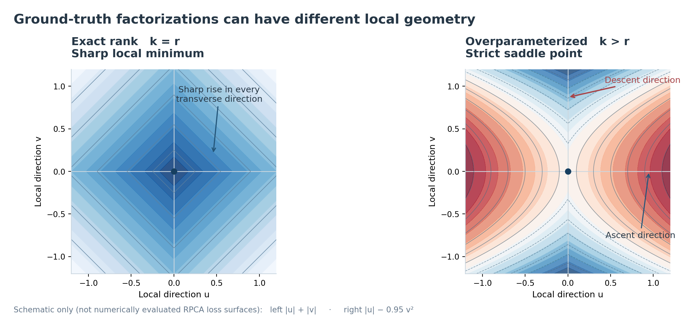

Research project · Summer 2025
Certifying Optimality in Nonconvex Robust PCA
The University of Hong Kong · Advisor: Prof. Lexiao Lai
A theoretical study of first-order optimality and local geometry in nonsmooth, nonconvex low-rank matrix factorization.
The problem
Robust principal component analysis aims to separate a low-rank signal L from sparse corruptions S in an observed matrix M = L + S. A computationally attractive formulation replaces the low-rank matrix by a product of two smaller factor matrices and minimizes an entrywise ℓ₁ residual.
This objective is nonsmooth and nonconvex. A central question is why ground-truth factorizations should still have favorable optimality properties when the observations contain sparse outliers.
Proof strategy · From structure to criticality
My research contribution centered on first-order optimality certification, connecting the geometry of the low-rank tangent space to concentration estimates for randomly supported corruptions.
In particular, under appropriate incoherence, rank, and sparsity conditions, the analysis bounds the restricted ℓ₁ operator norm of the composition between a sparse-support projection and a low-rank tangent-space projection, leading to a first-order certificate.
Tools involved include Clarke subdifferentials, tangent-space projections, incoherence, concentration inequalities, and union bounds.
Paper-level results
Our preprint proves that, under the paper's statistical assumptions, ground-truth rank-r factorizations are Clarke critical points with high probability. It also characterizes rank-dependent local geometry: exact-rank factorizations form sharp local minima, while certain overparameterized ground-truth factorizations are strict saddle points.
This is a local optimality and geometry result, not a claim that the ground truth globally minimizes the nonconvex objective under all sparse corruptions. For assumptions and the precise theorem statement, please consult the paper.
Critical-point geometry
Under the incoherence, rank, and sparse-corruption assumptions of Theorem 1, ground-truth factorizations are Clarke critical points with high probability. Their second-order behavior changes with the factorization rank: sharp local minima when k = r, but strict saddle points when k > r, for the rank-r factorization set considered in the paper.

In particular, criticality alone does not imply local optimality in the overparameterized setting. Extra factor degrees of freedom can create directions of descent, even when the product equals the true low-rank matrix.
Numerical experiments
Our paper studies the ℓ₁ factorized objective solved by a subgradient method. The experiments illustrate convergence with small initialization (Figure 1), compare recovery success rates across corruption probabilities and ranks (Figure 2), and benchmark runtime and accuracy against alternative methods (Table 1).

In this specific benchmark, the factorized subgradient method took 199.4 seconds on average and attained relative spectral error 8.21 × 10⁻¹⁰, compared with 479.1 seconds and 1.48 × 10⁻⁸ for PCP solved by IALM. Other implementations may differ in performance.
Recovery across ranks and corruption levels
The paper also reports empirical recovery success rates on 100 × 80 synthetic matrices, with 100 trials at each grid point (Figure 2). The left heatmap corresponds to subgradient minimization of the factorized objective with search rank k = 20; the right heatmap corresponds to PCP solved by IALM.


Original Figure 1 also includes convergence traces for exact-rank and overparameterized factorizations. See Section 1.1 of the preprint for the trajectories and step-size schedule.
Publication & presentation
Pinxi Gong, Lexiao Lai, Jianhao Ma. Certifying Optimality in Nonconvex Robust PCA. arXiv:2601.21333, 2026. Preprint under review at IEEE Transactions on Information Theory.
A First Step to Certifying Optimality in Nonconvex Robust PCA. Poster presentation, HKU Faculty of Science SRF/ORF/URFP, October 2025.